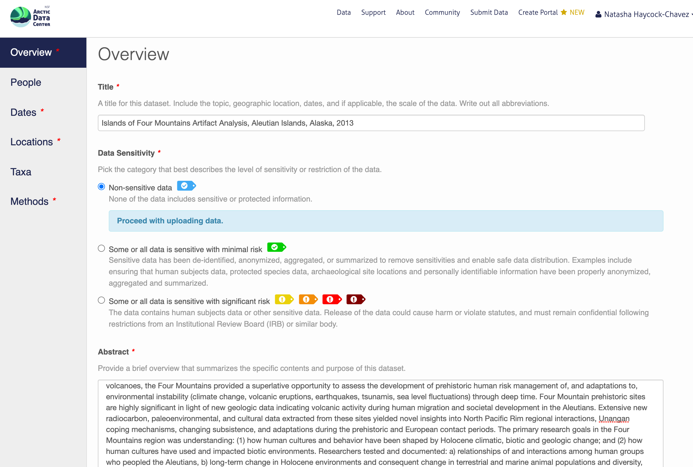
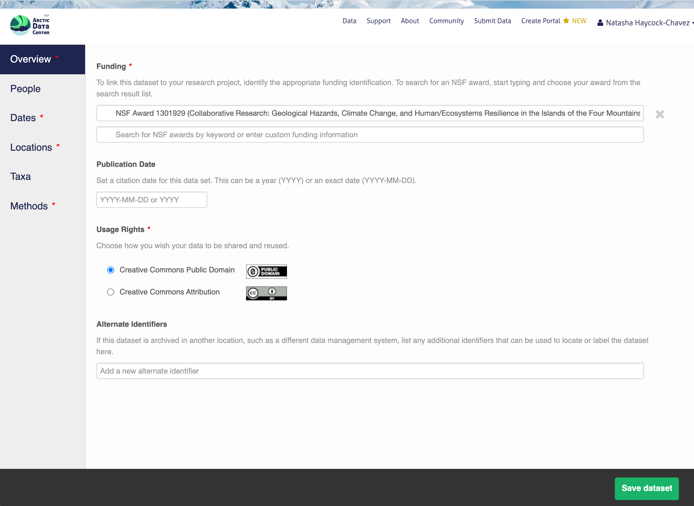
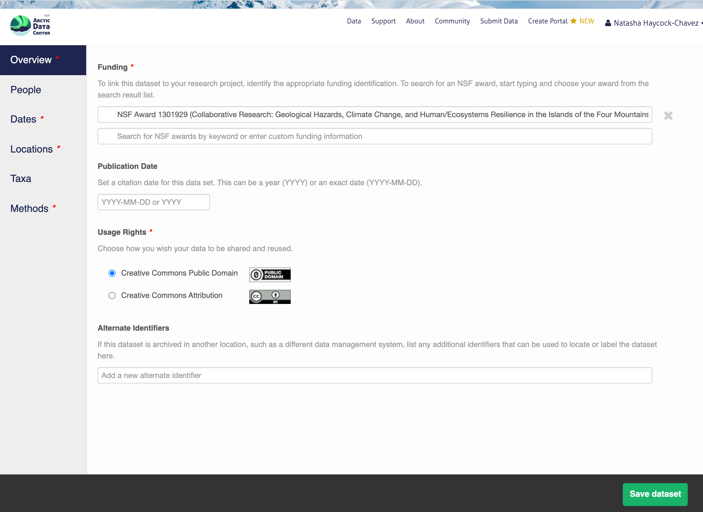
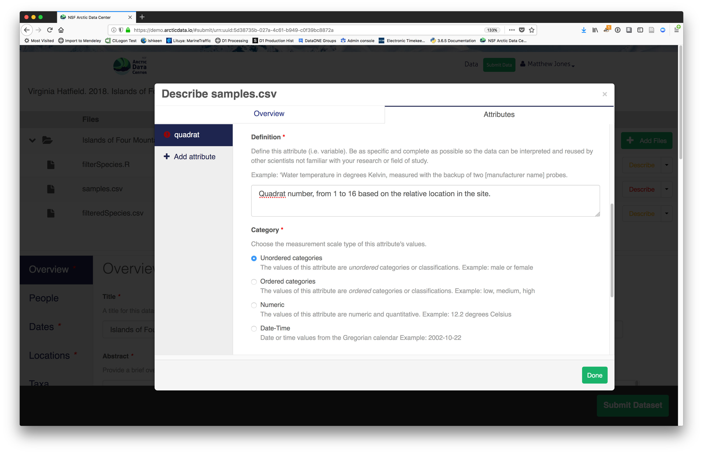
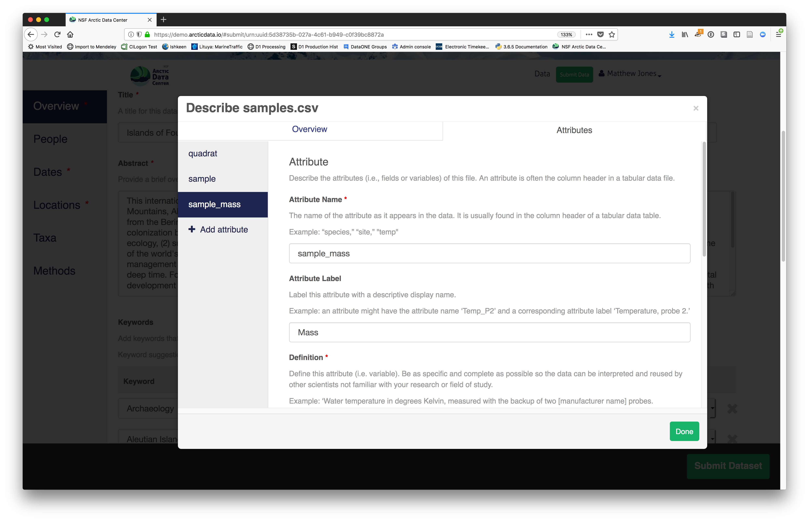
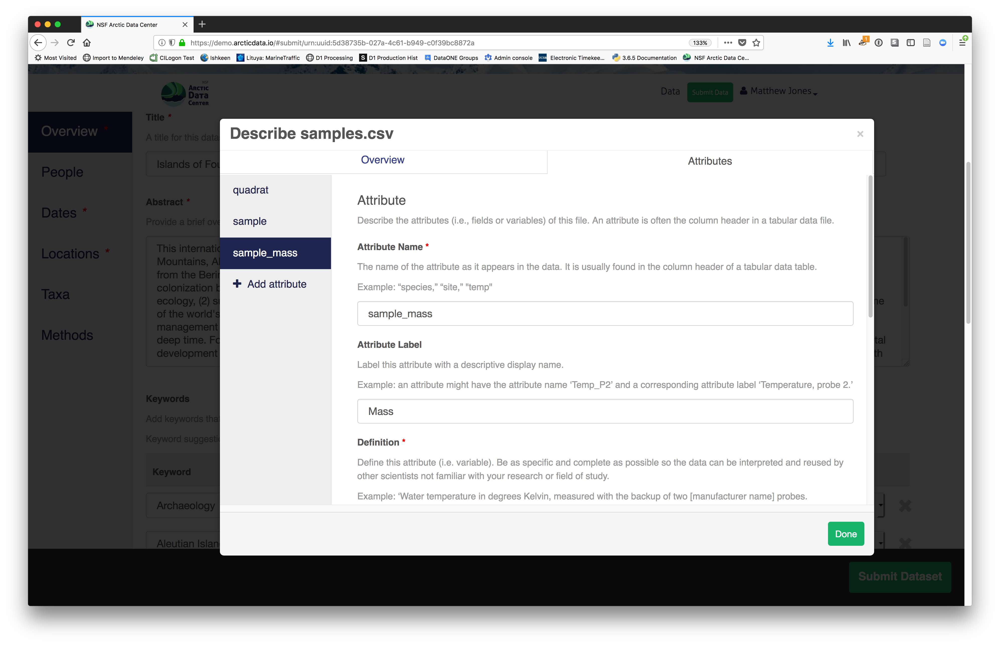
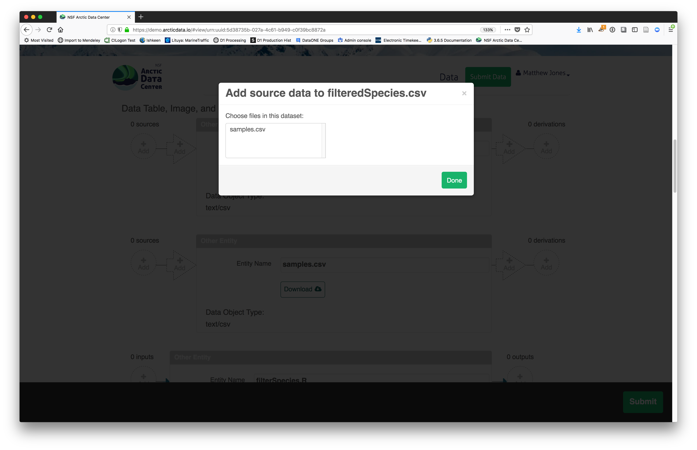

2 Documenting and Publishing Data
2.1 Data Documentation and Publishing
2.1.1 Learning Objectives
In this lesson, you will learn:
- About open data archives, especially the Arctic Data Center
- What science metadata are and how they can be used
- How data and code can be documented and published in open data archives
- Web-based submission

2.1.3 Data repositories: built for data (and code)
- GitHub is not an archival location
- Examples of dedicated data repositories: KNB, Arctic Data Center, tDAR, EDI, Zenodo
- Rich metadata
- Archival in their mission
- Certification for repositories: https://www.coretrustseal.org/
- Data papers, e.g., Scientific Data
- List of data repositories: http://re3data.org
- Repository finder tool: https://repositoryfinder.datacite.org/

2.1.4 Metadata
Metadata are documentation describing the content, context, and structure of data to enable future interpretation and reuse of the data. Generally, metadata describe who collected the data, what data were collected, when and where they were collected, and why they were collected.
For consistency, metadata are typically structured following metadata content standards such as the Ecological Metadata Language (EML). For example, here’s an excerpt of the metadata for a sockeye salmon dataset:
<?xml version="1.0" encoding="UTF-8"?>
<eml:eml packageId="df35d.442.6" system="knb"
xmlns:eml="eml://ecoinformatics.org/eml-2.1.1">
<dataset>
<title>Improving Preseason Forecasts of Sockeye Salmon Runs through
Salmon Smolt Monitoring in Kenai River, Alaska: 2005 - 2007</title>
<creator id="1385594069457">
<individualName>
<givenName>Mark</givenName>
<surName>Willette</surName>
</individualName>
<organizationName>Alaska Department of Fish and Game</organizationName>
<positionName>Fishery Biologist</positionName>
<address>
<city>Soldotna</city>
<administrativeArea>Alaska</administrativeArea>
<country>USA</country>
</address>
<phone phonetype="voice">(907)260-2911</phone>
<electronicMailAddress>mark.willette@alaska.gov</electronicMailAddress>
</creator>
...
</dataset>
</eml:eml>That same metadata document can be converted to HTML format and displayed in a much more readable form on the web: https://knb.ecoinformatics.org/#view/doi:10.5063/F1F18WN4
 And, as you can see, the whole dataset or its components can be downloaded and
reused.
And, as you can see, the whole dataset or its components can be downloaded and
reused.
Also note that the repository tracks how many times each file has been downloaded, which gives great feedback to researchers on the activity for their published data.
2.1.5 Structure of a data package
Note that the dataset above lists a collection of files that are contained within the dataset. We define a data package as a scientifically useful collection of data and metadata that a researcher wants to preserve. Sometimes a data package represents all of the data from a particular experiment, while at other times it might be all of the data from a grant, or on a topic, or associated with a paper. Whatever the extent, we define a data package as having one or more data files, software files, and other scientific products such as graphs and images, all tied together with a descriptive metadata document.

These data repositories all assign a unique identifier to every version of every
data file, similarly to how it works with source code commits in GitHub. Those identifiers
usually take one of two forms. A DOI identifier is often assigned to the metadata
and becomes the publicly citable identifier for the package. Each of the other files
gets a global identifier, often a UUID that is globally unique. In the example above,
the package can be cited with the DOI doi:10.5063/F1F18WN4,and each of the individual
files have their own identifiers as well.
2.1.6 DataONE Federation
DataONE is a federation of dozens of data repositories that work together to make their systems interoperable and to provide a single unified search system that spans the repositories. DataONE aims to make it simpler for researchers to publish data to one of its member repositories, and then to discover and download that data for reuse in synthetic analyses.
DataONE can be searched on the web (https://search.dataone.org/), which effectively allows a single search to find data from the dozens of members of DataONE, rather than visiting each of the (currently 44!) repositories one at a time.

2.1.7 Publishing data from the web
Each data repository tends to have its own mechanism for submitting data and providing metadata. With repositories like the KNB Data Repository and the Arctic Data Center, we provide some easy to use web forms for editing and submitting a data package. This section provides a brief overview of some highlights within the data submission process, in advance of a more comprehensive hands-on activity.
ORCiDs
We will walk through web submission on https://demo.arcticdata.io, and start by logging in with an ORCID account. ORCID provides a common account for sharing scholarly data, so if you don’t have one, you can create one when you are redirected to ORCID from the Sign In button.


ORCID is a non-profit organization made up of research institutions, funders, publishers and other stakeholders in the research space. ORCID stands for Open Researcher and Contributor ID. The purpose of ORCID is to give researchers a unique identifier which then helps highlight and give credit to researchers for their work. If you click on someone’s ORCID, their work and research contributions will show up (as long as the researcher used ORCID to publish or post their work).
After signing in, you can access the data submission form using the Submit button. Once on the form, upload your data files and follow the prompts to provide the required metadata.

Sensitive Data Handling
Underneath the Title field, you will see a section titled “Data Sensitivity”. As the primary repository for the NSF Office of Polar Programs Arctic Section, the Arctic Data Center accepts data from all disciplines. This includes data from social science research that may include sensitive data, meaning data that contains personal or identifiable information. Sharing sensitive data can pose challenges to researchers, however sharing metadata or anonymized data contributes to discovery, supports open science principles, and helps reduce duplicate research efforts.
To help mitigate the challenges of sharing sensitive data, the Arctic Data Center has added new features to the data submission process influenced by the CARE Principles for Indigenous Data Governance (Collective benefit, Authority to control, Responsibility, Ethics). Researchers submitting data now have the option to choose between varying levels of sensitivity that best represent their dataset. Data submitters can select one of three sensitivity level data tags that best fit their data and/or metadata. Based on the level of sensitivity, guidelines for submission are provided. The data tags range from non-confidential information to maximally sensitive information.
The purpose of these tags is to ethically contribute to open science by making the richest set of data available for future research. The first tag, “non-sensitive data”, represents data that does not contain potentially harmful information, and can be submitted without further precaution. Data or metadata that is “sensitive with minimal risk” means that either the sensitive data has been anonymized and shared with consent, or that publishing it will not cause any harm. The third option, “some or all data is sensitive with significant risk” represents data that contains potentially harmful or identifiable information, and the data submitter will be asked to hold off submitting the data until further notice. In the case where sharing anonymized sensitive data is not possible due to ethical considerations, sharing anonymized metadata still aligns with FAIR (Findable, Accessible, Interoperable, Reproducible) principles because it increases the visibility of the research which helps reduce duplicate research efforts. Hence, it is important to share metadata, and to publish or share sensitive data only when consent from participants is given, in alignment with the CARE principles and any IRB requirements.
You will continue to be prompted to enter information about your research, and in doing so, create your metadata record. We recommend taking your time because the richer your metadata is, the more easily reproducible and usable your data and research will be for both your future self and other researchers. Detailed instructions are provided below for the hands-on activity.
Research Methods
Methods are critical to accurate interpretation and reuse of your data. The editor allows you to add multiple different methods sections, so that you can include details of sampling methods, experimental design, quality assurance procedures, and/or computational techniques and software.

As part of a recent update, researchers are now asked to describe the ethical data practices used throughout their research. The information provided will be visible as part of the metadata record. This feature was added to the data submission process to encourage transparency in data ethics. Transparency in data ethics is a vital part of open science and sharing ethical practices encourages deeper discussion about data reuse and ethics.
We encourage you to think about the ethical data and research practices that were utilized during your research, even if they don’t seem obvious at first.
File and Variable Level Metadata
In addition to providing information about, (or a description of) your dataset, you can also provide information about each file and the variables within the file. By clicking the “Describe” button you can add comprehensive information about each of your measurements, such as the name, measurement type, standard units etc.

Provenance
The data submission system also provides the opportunity for you to provide provenance information, describe the relationship between package elements. When viewing your dataset followinng submission, After completing your data description and submitting your dataset you will see the option to add source data and code, and derived data and code.

These are just some of the features and functionality of the Arctic Data Center submission system and we will go through them in more detail below as part of a hands-on activity.
2.1.7.1 Download the data to be used for the tutorial
I’ve already uploaded the test data package, and so you can access the data here:
Grab both CSV files, and the R script, and store them in a convenient folder.

2.1.7.2 Login via ORCID
We will walk through web submission on https://demo.arcticdata.io, and start by logging in with an ORCID account. ORCID provides a common account for sharing scholarly data, so if you don’t have one, you can create one when you are redirected to ORCID from the Sign In button.
When you sign in, you will be redirected to orcid.org, where you can either provide your existing ORCID credentials or create a new account. ORCID provides multiple ways to login, including using your email address, an institutional login from many universities, and/or a login from social media account providers. Choose the one that is best suited to your use as a scholarly record, such as your university or agency login.
2.1.7.3 Create and submit the dataset
After signing in, you can access the data submission form using the Submit button. Once on the form, upload your data files and follow the prompts to provide the required metadata.
2.1.7.3.1 Click Add Files to choose the data files for your package
You can select multiple files at a time to efficiently upload many files.
The files will upload showing a progress indicator. You can continue editing metadata while they upload.
2.1.7.3.2 Enter Overview information
This includes a descriptive title, abstract, and keywords.

 You also must enter a funding award number and choose a license. The funding field will
search for an NSF award identifier based on words in its title or the number itself. The licensing options are CC-0 and CC-BY, which both allow your data to be downloaded and re-used by other researchers.
You also must enter a funding award number and choose a license. The funding field will
search for an NSF award identifier based on words in its title or the number itself. The licensing options are CC-0 and CC-BY, which both allow your data to be downloaded and re-used by other researchers.
- CC-0 Public Domain Dedication: “…can copy, modify, distribute and perform the work, even for commercial purposes, all without asking permission.”
- CC-BY: Attribution 4.0 International License: “…free to…copy,…redistribute,…remix, transform, and build upon the material for any purpose, even commercially,…[but] must give appropriate credit, provide a link to the license, and indicate if changes were made.”
 

2.1.7.3.3 People Information
Information about the people associated with the dataset is essential to provide credit through citation and to help people understand who made contributions to the product. Enter information for the following people:
- Creators - all the people who should be in the citation for the dataset
- Contacts - one is required, but defaults to the first Creator if omitted
- Principal Investigators
- Any others that are relevant
For each, please provide their ORCID identifier, which helps link this dataset to their other scholarly works.

2.1.7.3.4 Location Information
The geospatial location that the data were collected is critical for discovery and interpretation of the data. Coordinates are entered in decimal degrees, and be sure to use negative values for West longitudes. The editor allows you to enter multiple locations, which you should do if you had noncontiguous sampling locations. This is particularly important if your sites are separated by large distances, so that spatial search will be more precise.

Note that, if you miss fields that are required, they will be highlighted in red to draw your attention. In this case, for the description, provide a comma-separated place name, ordered from the local to global:
- Mission Canyon, Santa Barbara, California, USA

2.1.7.3.5 Temporal Information
Add the temporal coverage of the data, which represents the time period to which data apply. Again, use multiple date ranges if your sampling was discontinuous.

2.1.7.3.6 Methods
Methods are critical to accurate interpretation and reuse of your data. The editor allows you to add multiple different methods sections, so that you can include details of sampling methods, experimental design, quality assurance procedures, and/or computational techniques and software. Please be complete with your methods sections, as they are fundamentally important to reuse of the data.
2.1.7.3.7 Save a first version with Submit
When finished, click the Submit Dataset button at the bottom.
If there are errors or missing fields, they will be highlighted.
Correct those, and then try submitting again. When you are successful, you should
see a large green banner with a link to the current dataset view. Click the X
to close that banner if you want to continue editing metadata.
 Success!
Success!
2.1.7.4 File and variable level metadata
The final major section of metadata concerns the structure and content of your data files. In this case, provide the names and descriptions of the data contained in each file, as well as details of their internal structure.
For example, for data tables, you’ll need the name, label, and definition of each variable in your file. Click the Describe button to access a dialog to enter this information.
 The Attributes tab is where you enter variable (aka attribute)
information, including:
The Attributes tab is where you enter variable (aka attribute)
information, including:
- variable name (for programs)
- variable label (for display)
- variable definition (be specific)
- type of measurement

- units & code definitions
 You’ll need to add these definitions for every variable (column) in
the file. When done, click Done.

Now, the list of data files will show a green checkbox indicating that you have
fully described that file’s internal structure. Proceed with the other CSV
files, and then click Submit Dataset to save all of these changes.
You’ll need to add these definitions for every variable (column) in
the file. When done, click Done.

Now, the list of data files will show a green checkbox indicating that you have
fully described that file’s internal structure. Proceed with the other CSV
files, and then click Submit Dataset to save all of these changes.
 After you get the big green success message, you can visit your
dataset and review all of the information that you provided. If
you find any errors, simply click Edit again to make changes.
After you get the big green success message, you can visit your
dataset and review all of the information that you provided. If
you find any errors, simply click Edit again to make changes.
2.1.7.5 Add workflow provenance
Understanding the relationships between files (aka provenance) in a package is critically important, especially as the number of files grows. Raw data are transformed and integrated to produce derived data, which are often then used in analysis and visualization code to produce final outputs. In the DataONE network, we support structured descriptions of these relationships, so researchers can see the flow of data from raw data to derived to outputs.
You add provenance by navigating to the data table descriptions and selecting the
Add buttons to link the data and scripts that were used in your computational
workflow. On the left side, select the Add circle to add an input data source
to the filteredSpecies.csv file. This starts building the provenance graph to
explain the origin and history of each data object.
 The linkage to the source dataset should appear.
Then you can add the link to the source code that handled the conversion
between the data files by clicking on Add arrow and selecting the R script:


 The diagram now shows the relationships among the data files and the R script, so
click Submit to save another version of the package.
The diagram now shows the relationships among the data files and the R script, so
click Submit to save another version of the package.
 Et voilà! A beautifully preserved data package!
Et voilà! A beautifully preserved data package!